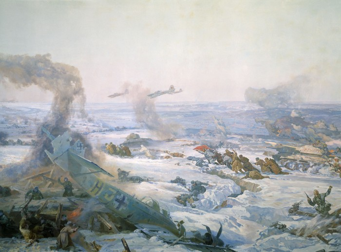
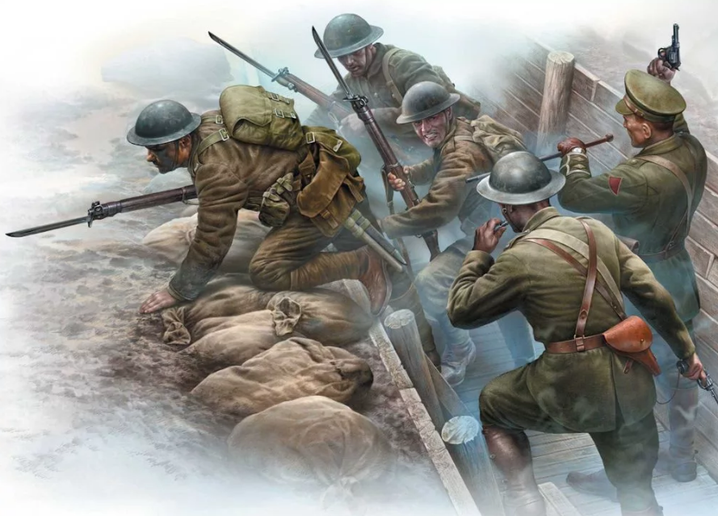
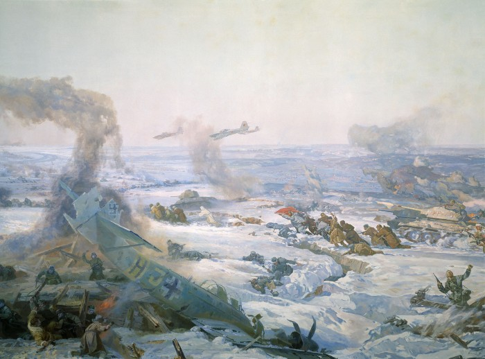
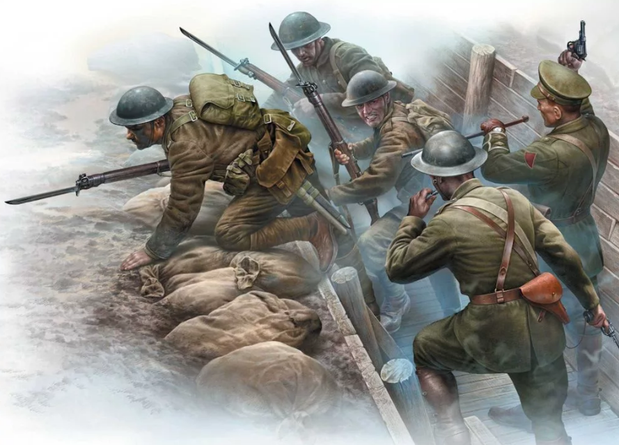

Глобин Фёдор Матвеевич
Содержание статьи
До войны
Был призван в ряды РККА 11 декабря 1941-ого года из Ростовского военкомата. На начало войны Глобину Фёдору Матвеевичу было 36 лет.
Во время войны
Во время военных действий работал поваром. В документах военкомата сказано, что Глобин Фёдор Матвеевич всё время своего нахождения на фронте добросовестно исполнял свои обязанности.
Награды
Все свои награды получил в боях.
Во время перевозки пищи на фронт, Фёдор Матвеевич Глобин попал под обстрел немецкой артиллерии. В результате машина была выведена из строя, но несмотря на произошедшее, Ф. М. Глобин смог завести брошеную машину врага и довезти продукты питания остро нуждавшимся в них солдатам. За этот подвиг Ф. М. Глобин был награждён главной солдатской медалью "За отвагу".
Следующий подвиг Ф. М. Глобин совершил, когда немцы прорвались на позиции оборонявшихся солдат. В этот самый момент Ф. М. Глобин раздавал солдатам пищу, но бросив приготовления, он вместе со всеми бросился на защиту. В том бою Глобин Ф. М. убил 4-х фашистов. За этот подвиг Фёдор Матвеевич был награждён орденом Красного Знамени.
Помимо совершённых ранее подвигов Ф. М. Глобину приходилось каждый день рисковать, доставляя продукты питания в окопы прямо под вражеским огнём. За это он последствии был награждён орденом Отчественной войны II степени
После войны
Нет информации.